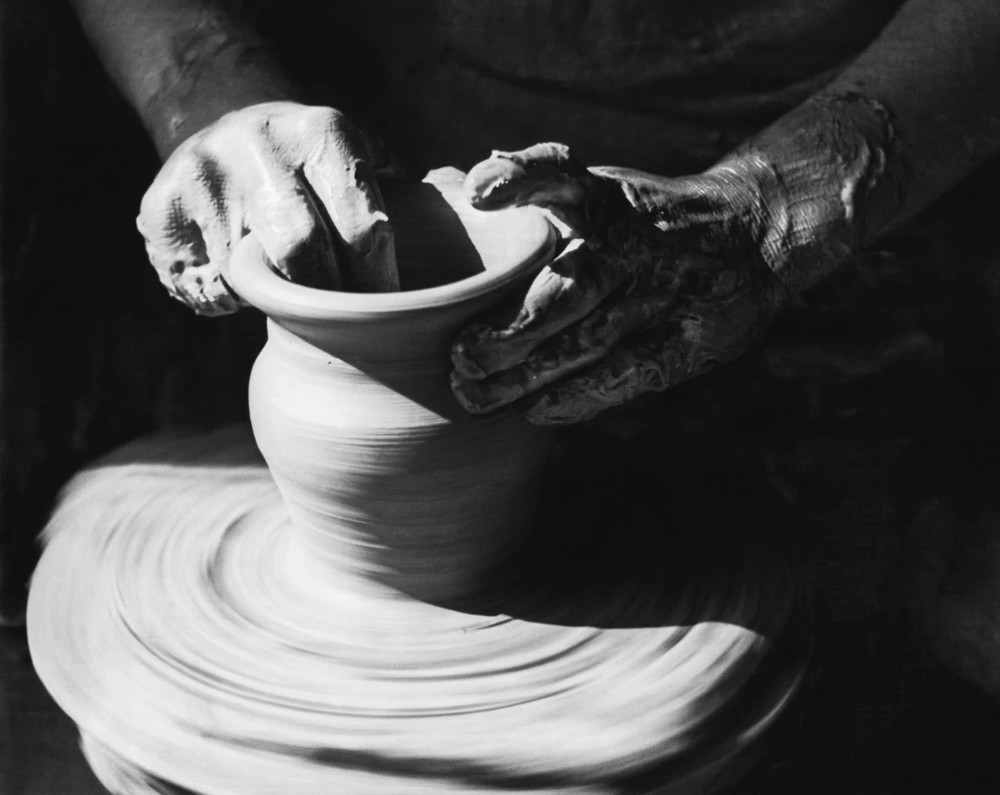
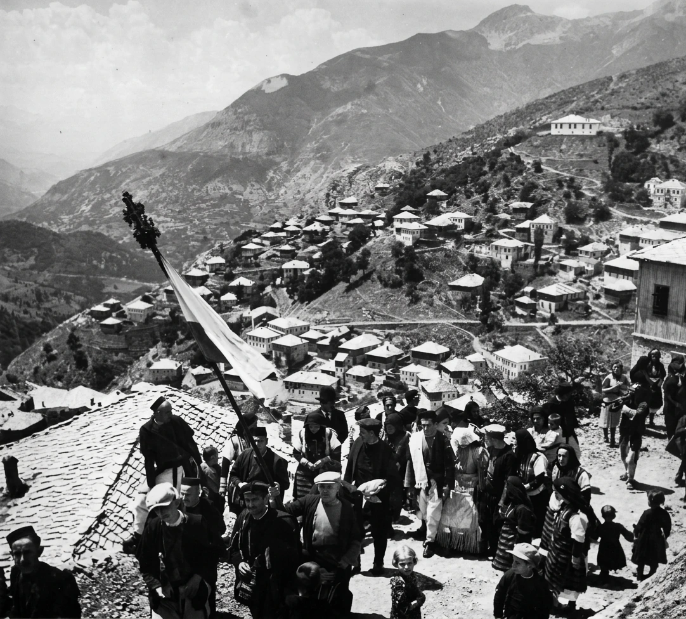
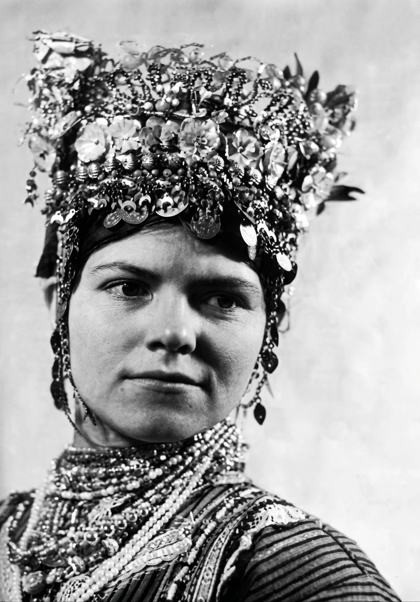

From the 1974 catalogue
English text from the solo exhibition catalogue, Museum of Contemporary Art, Skopje, May 1974. Reprinted by permission.
With the time photography has become one of the essential form trough which the reality is expressed, penetrating the past and reaching into the present as a determing factor of valid communications for the future, determing the essential dimensions of reality in which it exists. As an active participant in the direct end transposed conclusions of unquestionable facts and free improvisations which are innabled the human spirit and sensibility photography become a creative meaning of existing values through which time and space are focused, in the burning point of truth. It has become a necessity penetrating all the pores of life and science, so that they could no longer exist withaut it.
Even in his earliest photography, of images where youthful romantic poetry sparkles, Blagoja Drnkov shows direct sensibility and sensitivity, in order to express his own intimacy and attitude towards life. From those first creative realisation of reality through the eye of the camera, in the last 40 years Drnkov has passed trough all those inevitable internal conflicts, which accompany maturing.
As time passed the lens, once unapproachable and impartial, was becoming an organic unity, enabling penetrations into visuality of the substance itself, the essence of fundamental thought. Complete technical mastery was not his aim bat the sought release, the possibility for precise definition, a medium of expression ...
As a photographer he is always intensely careful, interested in everything, always in the right place, unnoticed, recording the moment and his own attitude towards it with an inspiring concentration. With no regard for external attractiveness, Drnkov, penetrates into the essence of things he has seen because he alweys finds the way to the sphere of very familiar experiences which go hand in hand with his competence then the allowed. His world is aur country — a colourful portrait of it with all ist natural as well as human and social complexity. His attatchment to his native place and to the familiar determined that specific elegic tone which pulsates like a melodious presence in his visualized silence. It is the exceptional melodiousness of Macedonia, which literally springs out from the disorderd water-jugs, which flows over the wrinkled face of the dry oak-tree spills over the old nailed gate, spreads over the quiet poppi — fields which breaks aut through the sharpened dramatics of Markukula’s, waves in the childeren’s excitement in an Ohrid boat, quivers in the simple little branch of the acacia ... Evrywhere, a black-white melodious colourfullness pours out from the inside. There we can recognize the authenticity of a real master, whom the eye the camera serves, as the silent keys serve the pianist to express the deepest emotions.
To talk abaut Blagoja Drnkov is to realize the numerous kilometres of exposed celluloid film, on which the biography of the outhor remains recorded, to recognize the years which dropped into the silent solitude of the war with the capricious little instrument — from their first acquaintance and their misanderstanding to the definite mutual identification, when it was impossible to distanguish them from each ather. And for such an achievement time relations are not the only requirement for survival, but first of all enormous love, patience and wisdom is necessery — as is the case with all arts.
And as much as photography has become a part of life, so has the creativity of Drnkov become a part of us. The 40 years of consequent presence through which we are revealed.









Sources
Museum of Contemporary Art, Skopje. Blagoja Drnkov, 1974. Solo exhibition catalogue with a text by Dimitar Kondovski. The photograph of the village beneath a flowering tree appears on PDF page 9.
Art Gallery, Skopje. Blagoja Drnkov: 50 Years of Creativity, 1984. Jubilee catalogue with Galičnik Wedding (PDF page 8) and Potter’s Hands (PDF page 9).
Jovan Šurbanoski, More Than Words, 2022. Exhibition catalogue on Drnkov’s photographs in the ethnological museum archive.
Cinematheque of Macedonia. Blagoja Drnkov. Biography and filmography.
Macedonian Academy of Sciences and Arts. Macedonian Encyclopedia, vol. 2, 2009, p. 1529. Reproduction of The Mirovačka Bride.
The photographs were supplied to Muzej. Credits for the opening portrait, the cotton harvest, both shoreline photographs, the Mariovo portrait, and the closing portrait are unconfirmed.